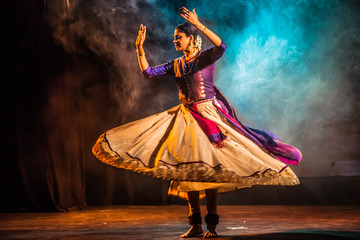

KATHAK

Coming from the northern part of the country from the state of Uttar Pradesh, Kathak comes from the word 'Katha' which means "story" in Hindi. It isn't a very smart guess for one to make that Kathak is performed in the form of storytelling through the body movements used by the dancer. Kathak is often referred to as the dance of love, and it can be performed by both by the male and female dancer together. This dance form focuses highly on the ankle movements complemented by the ankle that has to match the beats of the music. Ankle bells or gunghroos as they are called in the traditional language is an important part of the discipline of this dance form. Various distinctions can be witnessed in this dance forms as it is performed in various places in the country which includes Jaipur, Benaras, and Lucknow